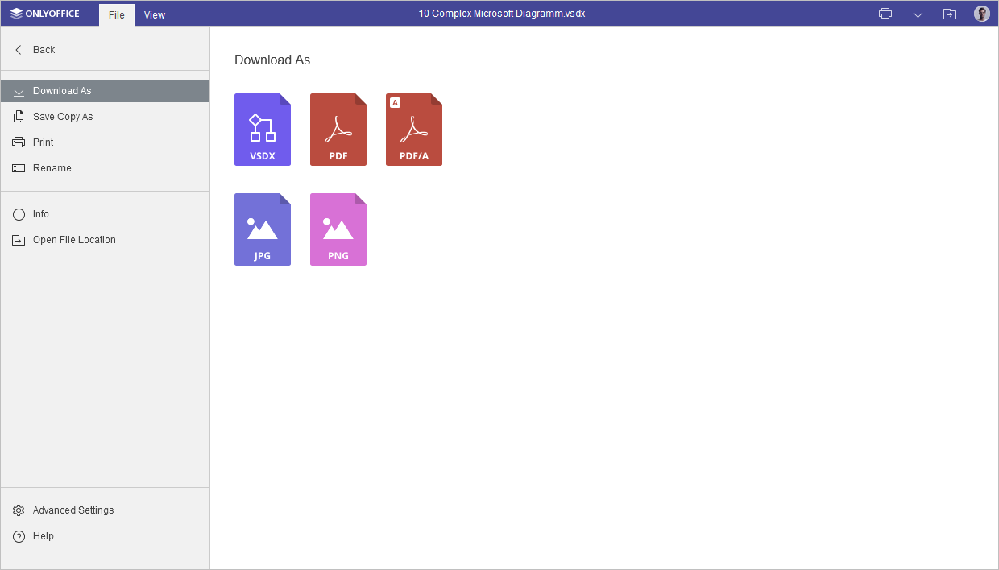
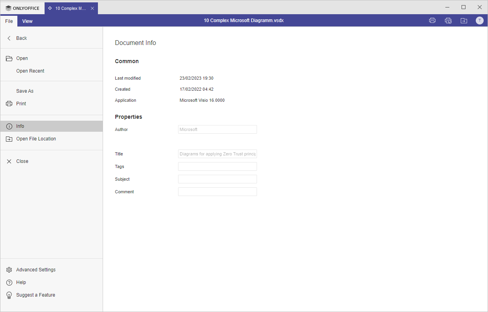

Kartica Datoteka
Kartica Datoteka u Diagram Viewer omogućava izvršavanje osnovnih operacija sa datotekama.
Odgovarajući prozor u Online Diagram Viewer-u:

Odgovarajući prozor u Desktop Diagram Viewer-u:

Korišćenjem ove kartice možete:
- preuzeti kao (sačuvati dokument u izabranom formatu na hard disk računara), sačuvati kopiju kao (sačuvati kopiju dokumenta u izabranom formatu na portalu dokumenata), odštampati datoteku ili je preimenovati,
- pregledati opšte informacije o dijagramu,
- pristupiti naprednim podešavanjima editora.